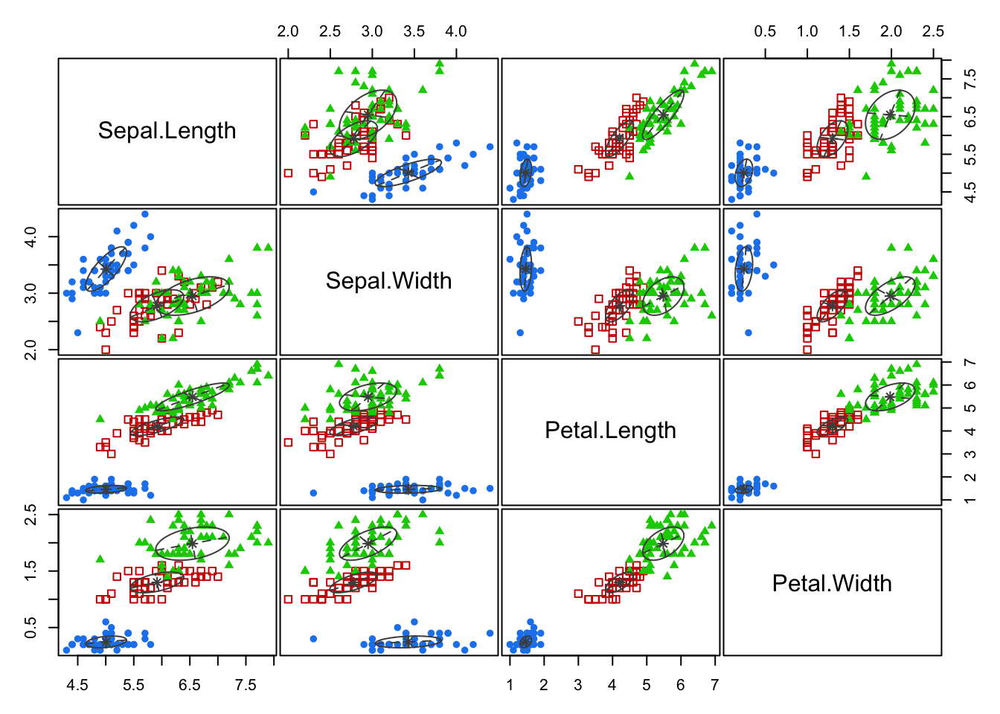
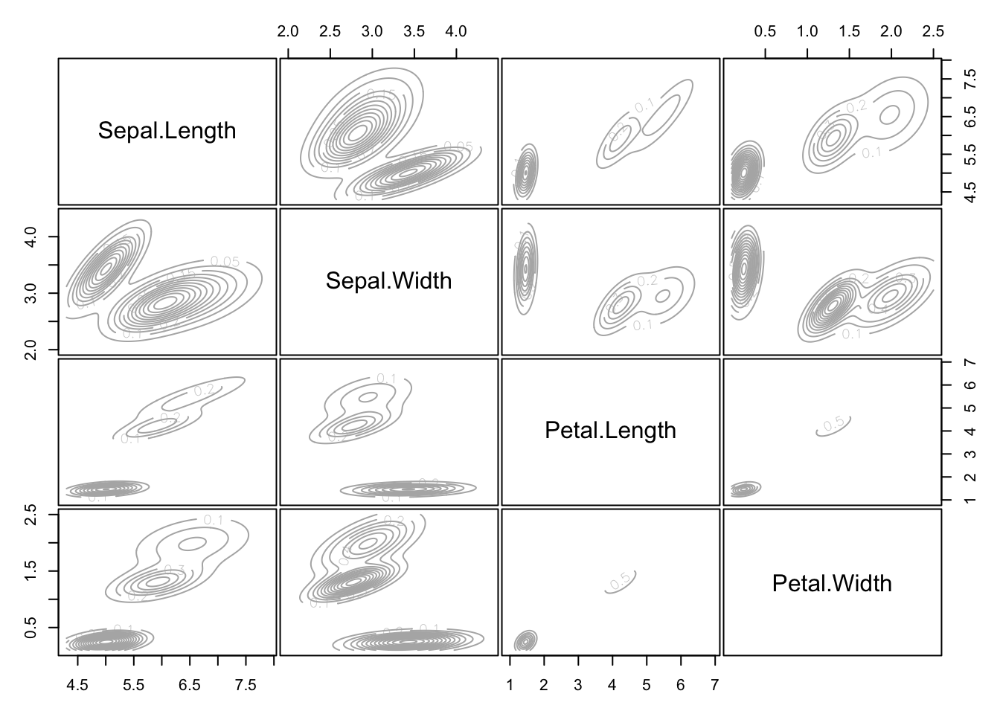

1.2 Model-based clustering
Model-based clustering is similar to K-means clustering, in that we want to allocate each case to a cluster. The difference is that we will now assume a probability distribution for the observations within each cluster.
Consider the situation where \(\mathbf x_i\) comes from one of \(K\) sub-populations, where the \(j\)th sub-population has probability density function \(f(\mathbf x; \boldsymbol \theta_j)\), \(j=1,\ldots , K\). Here \(\boldsymbol \theta_j\) are unknown parameters describing each sub-population.
The most common choice for the density \(f\) is to assume it is a multivariate normal distribution. The parameters \(\boldsymbol \theta_j\) would then represent the mean and variance of the MVN density for each cluster.
1.2.1 Maximum-likelihood estimation
We want to estimate the optimal allocation of each case to a cluster, i.e., estimate \(\boldsymbol \delta\), as well as the (usually) unknown parameter vectors \(\boldsymbol \theta_1, \ldots , \boldsymbol \theta_K\). We can do this by maximum likelihood estimation.
The likelihood for \(\boldsymbol \theta_1, \ldots , \boldsymbol \theta_K\) and the allocation \(\boldsymbol \delta\) may be written as \[\begin{align*} L(\boldsymbol \theta_1,\ldots , \boldsymbol \theta_K; \boldsymbol \delta)&=\left \{\prod_{\mathbf x\in \mathcal{C}_1} f(\mathbf x; \boldsymbol \theta_1)\right \}\cdots \left \{\prod_{\mathbf x\in \mathcal{C}_K} f(\mathbf x; \boldsymbol \theta_K)\right \}\\ &=\left \{\prod_{i: \delta(i)=1} f(\mathbf x_i; \boldsymbol \theta_1)\right \}\cdots \left \{\prod_{i: \delta(i)=K} f(\mathbf x_i; \boldsymbol \theta_K)\right \}\\ &= \prod_{i=1}^n f(\mathbf x_i; \boldsymbol \theta_{\delta(i)}) \end{align*}\]
Let \(\hat{\boldsymbol \theta}_1, \ldots , \hat{\boldsymbol \theta}_K\) and \(\hat{\boldsymbol \delta}\) denote the maximum likelihood estimators of \(\boldsymbol \theta_1, \ldots , \boldsymbol \theta_K\) and the unknown allocation \(\boldsymbol \delta\). Also, let \(\hat{\mathcal{C}}_1, \ldots, \hat{\mathcal{C}}_K\) denote the maximum likelihood clusters, which are determined by \(\hat{\boldsymbol \delta}\) via Equation (1.1).
Then we have the following result.
Proposition 1.1 Observations are classified to the cluster for which they have the largest likelihood: \[\hat{\delta}(i)= \arg \max_k f(\mathbf x_i; \hat{\boldsymbol \theta}_k).\]
Proof. Suppose observation \(i\), \(\mathbf x_i\), gets classified to cluster \(\hat{\mathcal{C}}_j\) according to the maximum likelihood estimator, i.e., \[\hat{\delta}(i)=j\]
Then consider the encoder \(\boldsymbol \delta\) that is the same as \(\hat{\boldsymbol \delta}\), but which moves \(\mathbf x_i\) from \(\hat{\mathcal{C}}_j\) to \(\hat{\mathcal{C}}_k\).
\[\delta(i') =\begin{cases} \hat{\delta}(i') &\mbox{ for } i' \not = i\\ k & \mbox{ for } i' = i \end{cases}\]
Then the likelihood of \(\boldsymbol \delta\) is \[ L(\hat{\boldsymbol \theta}_1, \ldots , \hat{\boldsymbol \theta}_K; \boldsymbol \delta) = L(\hat{\boldsymbol \theta}_1, \ldots , \hat{\boldsymbol \theta}_K; \hat{\boldsymbol \delta})f(\mathbf x_i; \hat{\boldsymbol \theta}_k)/f(\mathbf x_i; \hat{\boldsymbol \theta}_j). \]
But by definition \[ L(\hat{\boldsymbol \theta}_1, \ldots , \hat{\boldsymbol \theta}_K; \boldsymbol \delta) \leq L(\hat{\boldsymbol \theta}_1, \ldots , \hat{\boldsymbol \theta}_K; \hat{\boldsymbol \delta}), \] as \(\hat{\boldsymbol \delta}\) maximizes the likelihood, and so we conclude that \[f(\mathbf x; \hat{\boldsymbol \theta}_k)/f(\mathbf x; \hat{\boldsymbol \theta}_j)\leq1\] for all \(k\) and thus Proposition 1.1 holds.Note the similarity to the sample ML discriminant rule considered in Section ??: in each case we classify \(\mathbf x\) to the cluster for which the likelihood \(f(\mathbf x; \hat{\boldsymbol \theta}_k)\) is greatest. The difference with LDA is that we are not given the cluster labels for the training data, and so we have to estimate \(\boldsymbol \delta\) as well as the different parameter vectors, \(\boldsymbol \theta_k\), for each cluster.
The computation for model-based clustering is beyond the scope of the module, but is covered in the Computational Statistics module (the section on the EM algorithm).
1.2.2 Multivariate Gaussian clusters
We now consider the case where the sub-populations are multivariate Gaussian, i.e. \(f(\mathbf x; \boldsymbol \theta_j)\) is the density of \(N_p({\boldsymbol{\mu}}_j, \boldsymbol{\Sigma}_j)\) for \(j=1, \ldots , K\). Here, \(\boldsymbol \theta_j\) consists of \({\boldsymbol{\mu}}_j\) and \(\boldsymbol{\Sigma}_j\) for each \(j=1, \ldots , K\).
In the general case, when the mean vector and covariance matrix are different for each sub-population, we know how to maximise the likelihood when the allocation \(\boldsymbol \delta\) is given (see Section ??). Conversely, given estimated parameters \(\hat{\boldsymbol \theta}_k\), we can estimate the encoder \(\boldsymbol \delta\) using Proposition 1.1. As for K-means, the procedure for doing model based clustering iterates between the steps
Estimate \(\boldsymbol \theta_k\) given the current partition \(\boldsymbol \delta\).
Estimate \(\boldsymbol \delta\) given parameter values \(\hat{\boldsymbol \theta}_1, \ldots, \hat{\boldsymbol \theta}_k\).
until convergence.
1.2.2.1 Link to K-means clustering
The case where \(\boldsymbol{\Sigma}_1=\cdots = \boldsymbol{\Sigma}_K=\sigma^2 \mathbf I_p\), i.e. the common covariance matrix is a scalar multiple of the \(p \times p\) identity matrix, turns out to be equivalent to K-means clustering. To see this, note that the maximum likelihood allocation \(\hat{\boldsymbol \delta}\) given estimated cluster means \(\hat{{\boldsymbol{\mu}}}_k\), is obtained by the \(\boldsymbol \delta\) which maximizes \[ \prod_{i=1}^n\exp(-\frac{1}{2\sigma}||\mathbf x_i-\hat{{\boldsymbol{\mu}}}_{\delta(i)}||_2^2) \] which is equivalent to minimizing \[ \sum_{j=1}^K \sum_{\mathbf x\in \mathcal{C}_j} \vert \vert \mathbf x- \hat{{\boldsymbol{\mu}}}_j\vert \vert^2. \] which in turn is equivalent to minimizing \(W(\boldsymbol \delta)\).
1.2.3 Example: Iris
The mclust library can be used to perform model-based clustering with Gaussian clusters. We just have to specify the number of required clusters.
Pairs plots of the classification of each point can easily be obtained, as can the estimated probability density of each cluster.


How to choose \(K\) in model-based clustering is beyond the scope of the module.